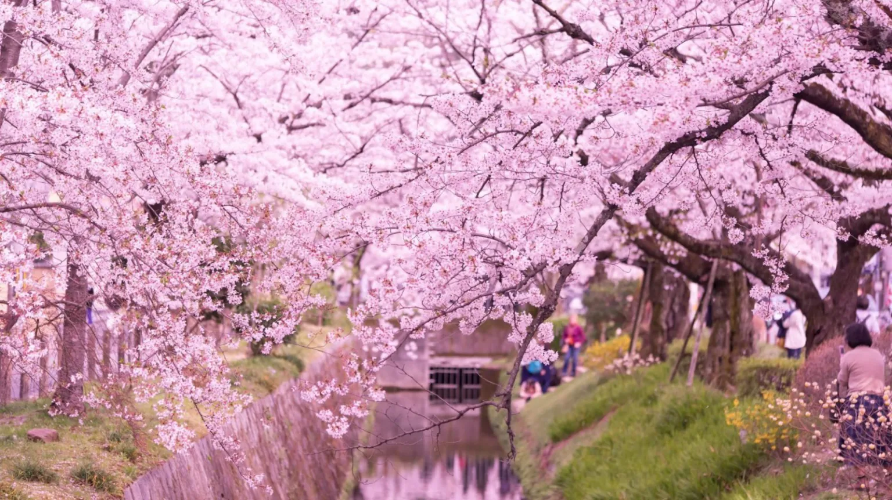

吉野山
賞花期 : 3月中旬 - 4月上旬
歷史文化 : 作為日本櫻花第一名所，吉野山自平安時代即為朝聖勝地，其山中社寺與修驗道文化交融，千百年來文人墨客賦詩吟咏、天皇巡幸，櫻花與信仰同根共生。
打卡熱點 : 下千本眺望臺｜中千本散策路｜上千本古寺階道｜纜車終點展望台
地圖位置
交通方式
京都站 → JR奈良線(約45分) → 奈良站 → 近鐵奈良線(快速列車約30分) → 吉野站 吉野山
周邊景點
金峯山寺： 世界遺產寺院，社殿後方可近距離賞櫻。
吉水神社： 保存平安時代遺構，境內賞櫻與古蹟共融。
花矢倉展望台： 步行登上古道小丘，眺望千本櫻全景。
纜車展望台： 從吉野站搭纜車可俯瞰整片櫻海。

哲學之道
賞花期 : 3月下旬-4月上旬
歷史文化 : 始於明治時期，因日本著名哲學家西田幾多郎沿此步道散策而得名，迄今保留連接銀閣寺與南禪寺的古意水路與文人雅士足跡。
打卡熱點 : 銀閣寺前櫻影｜疏水沿岸木橋｜法然院山門前｜南禪寺水路閣
地圖位置
交通方式
京都站 → 地鐵烏丸線 → 丸太町站 →→ 市巴士5號(往銀閣寺道-約10分鐘)
→ 「銀閣寺道」下車 → 步行約3分鐘 → 哲學之道起點
周邊景點
銀閣寺（東山慈照寺）: 哲學之道北端起點，室町時代禪宗寺院，庭院與枯山水聞名。
南禪寺水路閣：壯觀的紅磚拱形水道橋，結合工業美學與禪意景致。
祇園白川：從哲學之道南端可轉入，夜櫻與古街小橋流水交織出迷人風情。
平安神宮：疏水終點旁的大型神社，朱紅應天門與神苑櫻林氣勢非凡。